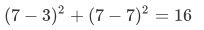
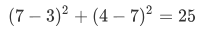
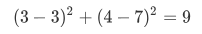
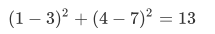
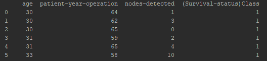
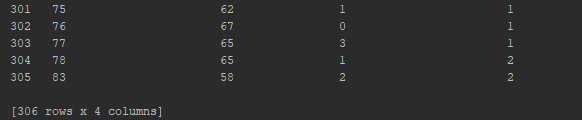
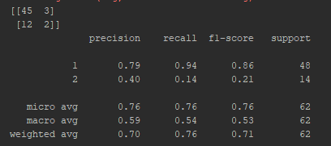

A. PENJELASAN K-NEAREST NEIGHBOR (KNN)¶
Algoritme k-nearest neighbor (k-NN atau KNN) adalah sebuah metode untuk melakukan klasifikasi terhadap objek berdasarkan data pembelajaran yang jaraknya paling dekat dengan objek tersebut.
K-nearest neighbor adalah algoritma supervised learning dimana hasil dari instance yang baru diklasifikasikan berdasarkan mayoritas dari kategori K-tetangga terdekat.
KNN digunakan dalam banyak aplikasi data mining, statistical pattern recognition, image processing, dll. Beberapa aplikasinya meliputi: pengenalan tulisan tangan, satellite image dan ECG pattern. ECG produces apatternreflecting the electrical activity of the heart.
Data pembelajaran diproyeksikan ke ruang berdimensi banyak, dimana masing-masing dimensi merepresentasikan fitur dari data. Ruang ini dibagi menjadi bagian-bagian berdasarkan klasifikasi data pembelajaran. Sebuah titik pada ruang ini ditandai kelas c jika kelas c merupakan klasifikasi yang paling banyak ditemui pada k buah tetangga terdekat titk tersebut. Dekat atau jauhnya tetangga biasanya dihitung berdasarkan jarak Euclidean.
Pada fase pembelajaran, algoritme ini hanya melakukan penyimpanan vektor-vektor fitur dan klasifikasi dari data pembelajaran. Pada fase klasifikasi, fitur-fitur yang sama dihitung untuk data test (yang klasifikasinya tidak diketahui). Jarak dari vektor yang baru ini terhadap seluruh vektor data pembelajaran dihitung, dan sejumlah k buah yang paling dekat diambil. Titik yang baru klasifikasinya diprediksikan termasuk pada klasifikasi terbanyak dari titik-titik tersebut.
Nilai k yang terbaik untuk algoritme ini tergantung pada data; secara umumnya, nilai k yang tinggi akan mengurangi efek noise pada klasifikasi, tetapi membuat batasan antara setiap klasifikasi menjadi lebih kabur. Nilai k yang bagus dapat dipilih dengan optimasi parameter, misalnya dengan menggunakan cross-validation. Kasus khusus di mana klasifikasi diprediksikan berdasarkan data pembelajaran yang paling dekat (dengan kata lain, k = 1) disebut algoritme nearest neighbor.
Ketepatan algoritme k-NN ini sangat dipengaruhi oleh ada atau tidaknya fitur-fitur yang tidak relevan, atau jika bobot fitur tersebut tidak setara dengan relevansinya terhadap klasifikasi. Riset terhadap algoritme ini sebagian besar membahas bagaimana memilih dan memberi bobot terhadap fitur, agar performa klasifikasi menjadi lebih baik.
Terdapat beberapa jenis algoritme pencarian tetangga terdekat, diantaranya:
- Linear scan
- Pohon kd
- Pohon Balltree
- Pohon metrik
- Locally-sensitive hashing (LSH)
Algoritme k-NN ini memiliki konsistensi yang kuat. Ketika jumlah data mendekati tak hingga, algoritme ini menjamin error rate yang tidak lebih dari dua kali Bayes error rate (error rate minimum untuk distribusi data tertentu).
B. ALGORITMA PERHITUNGAN KNN¶
Langkah-Langkah untuk menghitung KNN¶
- Menentukan parameter K sebagai banyaknya jumlah tetangga terdekat dengan objek baru.
- Menghitung jarak antar objek/data baru terhadap semua objek/data yan gtelah di training.
- Urutkan hasil perhitungan tersebut.
- Tentukan tetangga terdekat berdasarkan jarak minimum ke K.
- Tentukan kategori dari tetangga terdekat dengan objek/data.
- Gunakan kategori mayoritas sebagai klasifikasi objek/data baru.
Perhitungan Numerik KNN (Perhitungan dengan cara manual)¶
dalam menghitung jarak ada 4 cara tergantung yang makai;
-
Euclidean Distance $$ \begin{equation} d(x, y)=\sqrt{\sum_{i=1}{m}\left(x_{i}-y_{i}\right){2}} \end{equation} $$ ide rumus ini dari pytaghoras $$ \begin{equation} c=\sqrt{a{2}+b{2}} \end{equation} $$ d(x,y) dibaca distance antara x dan y
-
Manhattan Distance $$ \begin{equation} d(x, y)=\sum_{i=1}^{m}\left|x_{i}-y_{i}\right| \end{equation} $$ *rumus ini mencari jarak hanya dengan menjumlahkan semua selisih dari jarak
 dan
dan  .
.
Mungkin idenya dari menghitung jarak dari 3 ke 5 yaitu 2 karena |3-5|=2.
Apa bedanya dengan euclidean distance? manhattan distance itu :
Mengurangi per elemen antar 2 variabel, memutlakannya lalu menjumlahkannya. Sedangkan euclidean distance menghitung jarak antara 2 titik dengan konsep pythagoras.
-
Minkowsky Distance $$ \begin{equation} d(x, y)=\left(\sum_{i=1}{m}\left|x_{i}-y_{i}\right|{r}\right)^{1 / r} \end{equation} $$ ide rumus ini diambil dari konsep aljabar dengan objek vektor berdimensi n dan r bukan 1 dan 2. why? Karena kalau
 maka akan terbntuk manhattan distance, kalau
maka akan terbntuk manhattan distance, kalau  euclidean distance.
euclidean distance. -
Chebychev Distance $$ \begin{equation} d(x, y)=\max {i=1}\left|x{i}-y_{i}\right| \end{equation} $$ *rumus ini mencari jarak yang terbesar antara x_i dan y_i
Fact: Algoritma ini adalah algoritma yang paling simpel dari semua algoritma machine learning.
Fun : Algoritma ini bisa dipakai untuk “mesin pencari” seperti google.
Contoh¶
didapatkan dari kuesioner dengan obyek pengujian berupa dua atribut (daya tahan keasaman dan kekuatan) untuk mengklasifikasikan apakah sebuah kertas tissue tergolong bagus atau jelek. Berikut ini contoh datanya:
| X1=Daya Tahan Kesamaan (detik) | X2=Kekuatan (Kg/meter persegi) | Klasifikasi |
|---|---|---|
| 7 | 7 | Jelek |
| 7 | 4 | Jelek |
| 3 | 4 | Bagus |
| 1 | 4 | Bagus |
Sebuah pabrik memproduksi kertas tissue baru yang memiliki X1 = 3 dan X2 = 7. Kita gunakan algoritma KNN untuk melakukan prediksi termasuk klasifikasi apa (bagus atau jelek) kertas tissue yang baru ini.
Penyelesaian¶
-
Tentukan parameter K = jumlah banyaknya tetangga terdekat. Misal K=3
-
Hitung jarak antara data baru dan semua data yang ada di data training. Misal digunakan square distance dari jarak antara data baru dengan semua data yang ada di data training
| X1=Daya Tahan Kesamaan (detik) | X2=Kekuatan (Kg/meter persegi) | Square Distance ke Data baru (3,7) |
|---|---|---|
| 7 | 7 |  |
| 7 | 4 |  |
| 3 | 4 |  |
| 1 | 4 |  |
Urutkan jarak tersebut dan tentukan tetangga mana yang terdekat berdasarkan jarak minimum ke-K. kami menggunakan ecludian distance
| X1=Daya Tahan Kesamaan (detik) | X2=Kekuatan (Kg/meter persegi) | Square Distance ke Data baru (3,7) | Urutan (Ranking) Jarak | Apakah termasuk K-NN? |
|---|---|---|---|---|
| 7 | 7 | 3 | YA | |
| 7 | 4 | 4 | TIDAK | |
| 3 | 4 | 1 | YA | |
| 1 | 4 | 2 | YA |
- Tentukan kategori dari tetangga terdekat. Perhatikan pada baris kedua pada kolom terakhir: katagori dari tetangga terdekat (Y) tidak termasuk karena ranking dari data ini lebih dari 3 (=K).
| X1=Daya Tahan Kesamaan (detik) | X2=Kekuatan (Kg/meter persegi) | Square Distance ke Data baru (3,7) | Urutan (Ranking) Jarak | Apakah termasuk K-NN? | Y=Category of Nearest Neighbor |
|---|---|---|---|---|---|
| 7 | 7 |  |
3 | YA | Jelek |
| 7 | 4 |  |
4 | TIDAK | - |
| 3 | 4 |  |
1 | YA | Bagus |
| 1 | 4 |  |
2 | YA | Bagus |
- Gunakan kategori mayoritas yang sederhana dari tetangga yang terdekat tersebut sebagai nilai prediksi dari data yang baru.
–Kita punya2 kategori Bagus dan1 kategori Jelek, karena2>1 maka kita simpulkan bahwa kertas tissue baru tadi yang memiliki X1 = 3 dan X2 = 7 termasuk dalam kategori Bagus.
C. KELEBIHAN DAN KEKURANGAN KNN¶
Kelebihan¶
- Sangat nonlinear
kNN merupakan salah satu algoritma (model) pembelajaran mesin yang bersifat nonparametrik. Pembahasan mengenai model parametrik dan model nonparametrik bisa menjadi artikel sendiri, namun secara singkat, definisi model nonparametrik adalah model yang tidak mengasumsikan apa-apa mengenai distribusi instance di dalam dataset. Model nonparametrik biasanya lebih sulit diinterpretasikan, namun salah satu kelebihannya adalah garis keputusan kelas yang dihasilkan model tersebut bisa jadi sangat fleksibel dan nonlinear.
- Mudah dipahami dan diimplementasikan
Dari paparan yang diberikan dan penjelasan cara menghitung jarak dalam artikel ini, cukup jelas bahwa algoritma kNN mudah dipahami dan juga mudah dimplementasikan. Untuk mengklasifikasi instance x menggunakan kNN, kita cukup mendefinisikan fungsi untuk menghitung jarak antar-instance, menghitung jarak x dengan semua instance lainnya berdasarkan fungsi tersebut, dan menentukan kelas x sebagai kelas yang paling banyak muncul dalam k instance terdekat.
Kekurangan¶
-
Perlu menunjukkan parameter K (jumlah tetangga terdekat)
-
Tidak menangani nilai hilang (missing value) secara implisit
Jika terdapat nilai hilang pada satu atau lebih variabel dari suatu instance, perhitungan jarak instance tersebut dengan instance lainnya menjadi tidak terdefinisi. Bagaimana coba, menghitung jarak dalam ruang 3-dimensi jika salah satu dimensi hilang? Karenanya, sebelum menerapkan kNN kerap dilakukan imputasi untuk mengisi nilai-nilai hilang yang ada pada dataset. Contoh teknik imputasi yang paling umum adalah mengisi nilai hilang pada suatu variabel dengan nilai rata-rata variabel tersebut (mean imputation).
- Sensitif terhadap data pencilan (outlier)
Seperti yang telah dijelaskan Ali pada artikel sebelumnya, kNN bisa jadi sangat fleksibel jika k kecil. Fleksibilitas ini mengakibatkan kNN cenderung sensitif terhadap data pencilan, khususnya pencilan yang terletak di “tengah-tengah” kelas yang berbeda. Lebih jelasnya, perhatikan ilustrasi di bawah. Pada gambar kiri, seluruh instance bisa diklasifikasikan dengan benar ke dalam kelas biru dan jingga. Tetapi, ketika ditambahkan instance biru di antara instance jingga, beberapa instance jingga menjadi salah terklasifikasi.Perlu dipilih k yang tepat untuk mengurangi dampak data pencilan dalam kNN.
- Rentan terhadap variabel yang non-informatif
Meskipun kita telah menstandardisasi rentang variabel, kNN tetap tidak dapat mengetahui variabel mana yang signifikan dalam klasifikasi dan mana yang tidak
- Rentan terhadap dimensionalitas yang tinggi
Berbagai permasalahan yang timbul dari tingginya dimensionalitas (baca: banyaknya variabel) menimpa sebagian besar algoritma pembelajaran mesin, dan kNN adalah salah satu algoritma yang paling rentan terhadap tingginya dimensionalitas. Hal ini karena semakin banyak dimensi, ruang yang bisa ditempati instance semakin besar, sehingga semakin besar pula kemungkinan bahwa nearest neighbour dari suatu instance sebetulnya sama sekali tidak “near“.
- Rentan terhadap perbedaan rentang variabel
Dalam perhitungan jarak antar-instance, kNN menganggap semua variabel setara atau sama penting (lihat bagian penjumlahan pada rumus perhitungan jarak di atas). Jika terdapat variabel p yang memiliki rentang jauh lebih besar dibanding variabel-variabel lainnya, maka perhitungan jarak akan didominasi oleh p. Misalkan ada dua variabel, a dan b, dengan rentang variabel a 0 sampai 1.000 dan rentang variabel b 0 sampai 10. Kuadrat selisih dua nilai variabel b tidak akan lebih dari 100, sedangkan untuk variabel a kuadrat selisihnya bisa mencapai 1.000.000. Hal ini bisa mengecoh kNN sehingga kNN menganggap a tidak membawa pengaruh dalam perhitungan jarak karena rentangnya sangat besar dibanding rentang b.Ilustrasinya diberikan di bawah ini. Manakah yang merupakan nearest neighbour dari instance x? Jika dilihat dari “kacamata” komputer, nearest neighbour x bukanlah y, melainkan z, Mengapa? Untuk mengatasi perbedaan rentang, biasanya dilakukan preproses berupa standardisasi rentang semua variabel sebelum menerapkan algoritma kNN
- Nilai komputasi yang tinggi.
Untuk mengklasifikasi sebuah instance x, kNN harus menghitung jarak antara x dengan semua instance lain dalam dataset yang kita miliki. Dengan kata lain, kompleksitas waktu klasifikasi kNN berbanding lurus dengan jumlah instance latih. Jika dataset yang kita miliki berukuran besar (terdiri dari banyak instance dan/atau banyak variabel), proses ini bisa jadi sangat lambat. Bayangkan, jika kita punya 10.000 instance dengan masing-masing 20 variabel dan kita ingin mengklasifikasi 100 instance baru (instance uji), maka total operasi yang harus dilakukan menjadi:(100 instance uji x 10.000 instance latih) x 20 variabel/instance x 2 operasi/variabel = 40 juta operasi Beberapa cara pengindexan (K-D tree) dapat digunakan untuk mereduksi biaya komputasi.
D. IMPLEMENTASI HABERMAN DATASET DENGAN KNN MENGGUNAKAN PYTHON SCIKIT LEARN¶
Dataset¶
- Judul: Haberman's Survival Data
- Sources: (a) Donor: Tjen-Sien Lim (limt@stat.wisc.edu) (b) Date: March 4, 1999
- Jumlah Instances: 306
- Jumlah Attributes: 4 (termasuk attribute class)
- Informasi Attribute:
- Age of patient at time of operation (numerical)
- Patient's year of operation (year - 1900, numerical)
- Number of positive axillary nodes detected (numerical)
- Survival status (class attribute) 1 = the patient survived 5 years or longer 2 = the patient died within 5 year
Implementasi¶
Mengimport Librari¶
Install terlebih dahulu librari-librari yang dibutuhkan. maka, module dapat di eksekusi
import numpy as np import matplotlib.pyplot as plt import pandas as pd
Langkah 1: Mengimport DataSet¶
Untuk mengimport dan load data, anda dapat menggunkaan sintax dibawah ini:
# memasukkan url dataset kedalam variabel, sehingga anda tidak perlu mendownload data. cukup memanggilnya url = "https://archive.ics.uci.edu/ml/machine-learning-databases/haberman/haberman.data" # memasukkan nama kolom ke dalam dataset names = ['age', 'patient-year-operation', 'nodes-detected', '(Survival-status)Class'] # membaca dataset ke pandas dataframe dataset = pd.read_csv(url, names=names)
Untuk melihat data, eksekusi code berikut:
print(dataset) # atau dataset.head()
Maka, akan menampilkan data seperti dibawah ini (row paling atas dan bawah):


Langkah 2: Preprocessing¶
Langkah selanjutnya adalah memisahkan dataset kedalam atribut dan label. gunakan code berikut ini:
X = dataset.iloc[:, :-1].values y = dataset.iloc[:, 3].values
variabel X untuk mendefinisikan 3 Kolom pada dataset sedangkan variabel y untuk mendefinisikan label pada dataset.
Langkah 3: Train Test Split¶
Untuk memisahkan data menjadi data training dan data testing. performa algoritma yang saya gunakan selama fase testing tidak terlihat (un-seen data).
berikut code untuk membuat training dan testing data:
from sklearn.model_selection import train_test_split X_train, X_test, y_train, y_test = train_test_split(X, y, test_size=0.20)
script diatas memisahkan dataset 80% data training dan 20% data testing. dari 306 data, terbagi data training sebesar 245 data dan data testing sebesar 61 data.
Fitur Scaling¶
Sebelum kita memprediksi data yang sebenarnya. alangkah baiknya kita menggunakan fitur scaling untuk menormalisasikan data sebelum di testing.
berikut codenya:
from sklearn.preprocessing import StandardScaler scaler = StandardScaler() scaler.fit(X_train) X_train = scaler.transform(X_train) X_test = scaler.transform(X_test)
Langkah 4: Training dan Prediction¶
from sklearn.neighbors import KNeighborsClassifier classifier = KNeighborsClassifier(n_neighbors=7) classifier.fit(X_train, y_train)
langkah pertama adlah mengimport librari KNeighborsClassifier class from the sklearn.neighbors . Pada baris kedua, class di inisialisasi dengan parameter, i.e. n_neigbours.
nilai K yang diuji adalah K-7.
Kemudian kita memprediksi nilai dari datset:
y_pred = classifier.predict(X_test)
Langkah 5: Evaluating dari Algoritma¶
Untuk mengevaluasi sebuah algoritma, matrix, presisi, recall dan f1 score pada umumnya menggunnakan matrix dengan confusion_matrix dan classification_report methods dari sklearn.metrics
Berikut code programnya:
from sklearn.metrics import classification_report, confusion_matrix print(confusion_matrix(y_test, y_pred)) print(classification_report(y_test, y_pred))
Tampilan output dari script diatas:

dari hasil output diatas dapat diketahui bahwa nilai K-7 menghasilkan 71%
Langkah 6: Mengekstrak rating error pada K Value¶
Pada testing dan evaluasi data sebelumnya. kita telah mengecek akurasi pada K-. Namun, untuk menghasilkan nilai tingkat akurasi yang tinggi kita dapat mengecek beberapa sebagai acuan tanpa mengulang-ngulang data program yaitu dengan cara plot grafik dan coresponden nilai errror pada K.
Untuk menghitung, nilai value saya menggunakan distance K11:40. anda dapat menggunakan script berikut:
error = [] # menghitung nilai error pada K antara 1 dan 40 for i in range(1, 40): knn = KNeighborsClassifier(n_neighbors=i) knn.fit(X_train, y_train) pred_i = knn.predict(X_test) error.append(np.mean(pred_i != y_test))
Script diatas mengeksekusi perulangan 1 sampai 40. pada setiap iterasi, prediksi nilai error yang telah dihitung akan masuk dalam list error.
langkah selanjutnya adalah plot nilai error K. berikut script code:
plt.figure(figsize=(12, 6)) plt.plot(range(1, 40), error, color='red', linestyle='dashed', marker='o', markerfacecolor='blue', markersize=10) plt.title('Rating Error Nilai K') plt.xlabel('Nilai K') plt.ylabel('Mean Error')
Output
REFERENSI¶
https://id.wikipedia.org/wiki/KNN
https://en.wikipedia.org/wiki/Feature_scaling
https://belajarkalkulus.com/clustering-part-iii/
http://depandienda.it.student.pens.ac.id/file/knn_references.pdf
https://informatikalogi.com/algoritma-k-nn-k-nearest-neighbor/
https://stackabuse.com/k-nearest-neighbors-algorithm-in-python-and-scikit-learn/